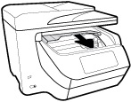

To clear a paper jam from the front of the printer
1. Slide up to open the cartridge access door.

2. If the print carriage is not obstructed, move the print carriage to the far right of the printer and remove the jammed paper.
If need, move the carriage to the far left of the printer, and remove any jammed or torn pieces of paper.
3. Slide down to close the cartridge access door.
